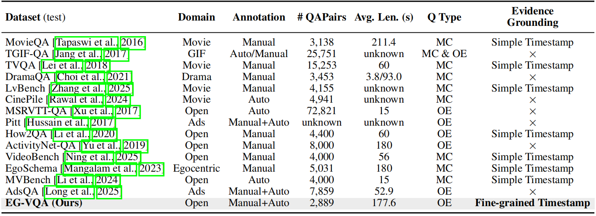
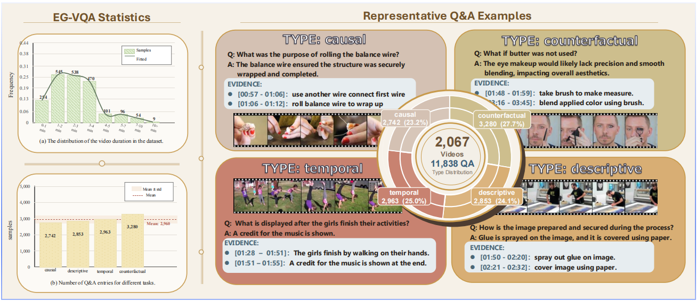
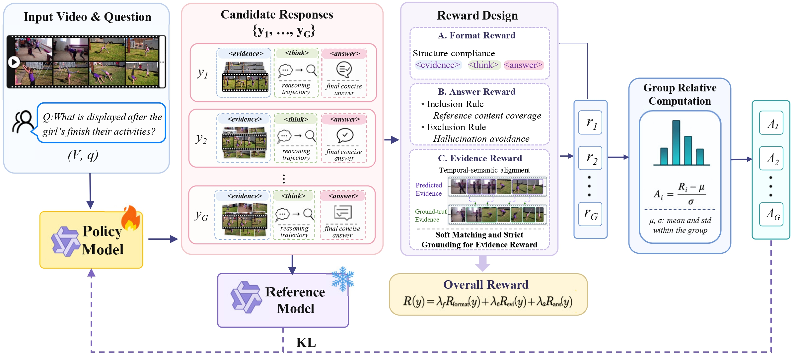
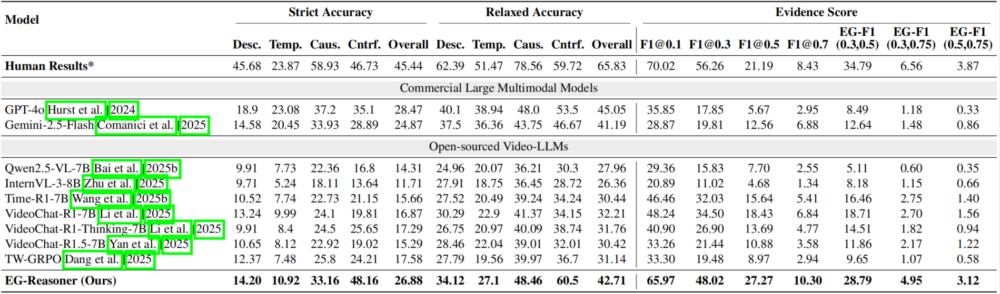
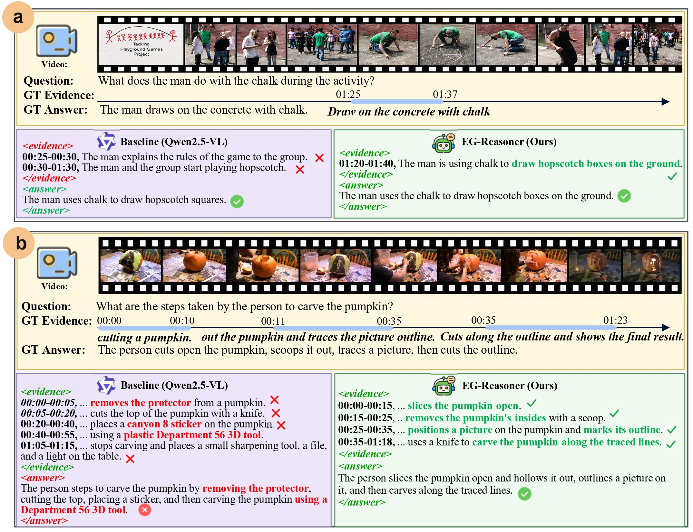

Abstract
Recent advances in Video Large Language Models (Video-LLMs) have yielded promising performance on video question answering (VideoQA). Nevertheless, existing benchmarks are predominantly evaluated through answer correctness, while the grounding of predictions in relevant video evidence remains largely unexamined. This disconnect between answer generation and evidence understanding motivates the construction of the Evidence-Grounded Video Question Answering Benchmark (EG-VQA), an open-ended evaluation protocol in which each QA pair is explicitly annotated with supporting temporal evidence, thereby requiring joint reasoning and precise evidence localization. EG-VQA is comprised of 2,067 videos and 11,838 QA pairs with fine-grained evidence annotations. To evaluate predicted evidence, Evidence-Grounded F1 (EG-F1) is introduced as a unified metric in which temporal alignment and semantic consistency against ground-truth evidence are jointly measured. Experimental evaluation reveals that even strong proprietary models struggle to accurately ground their predictions, exposing a fundamental discrepancy between answer correctness and faithful evidence localization. To bridge this gap, EG-Reasoner, an evidence-grounded reasoning model trained with explicit supervision, is proposed. State-of-the-art performance is achieved among open-source models, with results competitive against proprietary systems, particularly pronounced gains are observed on reasoning-intensive tasks such as counterfactual questions. These findings demonstrate that scaling alone is insufficient for robust video understanding and that structured evidence supervision is essential for the development of more reliable and interpretable VideoQA systems.
Benchmark Overview

Comparison between our EG-VQA and existing VideoQA benchmarks.

Overview of EG-VQA statistics and representative QA examples. EG-VQA contains 2,067 videos and 11,838 QA pairs, split in a video-disjoint manner into 8,949 training and 2,889 test samples. It covers four reasoning categories: descriptive, temporal, causal, and counterfactual questions, progressing from directly observable video content to event ordering, causal inference, and hypothetical reasoning grounded in specific video segments.

Construction Pipeline. EG-VQA is constructed through a pipeline that combines video data curation, reasoning-oriented question-answer generation, prompt refinement, and two-stage quality control. Each QA pair is paired with temporally localized evidence.
Model

EG-Reasoner Training Framework. Given a video and question, EG-Reasoner learns to produce structured responses that explicitly organize temporal evidence, reasoning, and the final answer. The model is optimized with reinforcement learning using a composite reward that jointly evaluates response format, answer correctness, and evidence grounding. During training, GRPO updates the policy by comparing multiple sampled responses, encouraging the model to generate faithful answers supported by localized video evidence.
Experiments

We compare the performance of EG-Reasoner with commercial large multimodal models and recent open-source Video-LLMs on EG-VQA. EG-Reasoner outperforms other open-source models in terms of both answer accuracy and evidence grounding.
Qualitative Analysis

As videos are analyzed, EG-Reasoner localizes key evidence regions and decomposes complex events into fine-grained temporal reasoning steps. Compared with the base model, it produces answers that are better grounded in the video content and less affected by loosely related context or hallucinated intermediate steps.
BibTeX
@misc{huang2026egvqa,
title={EG-VQA: Benchmarking Verifiable Video Question Answering with Grounded Temporal Evidence},
author={Huang, Linpeng and Chen, Weixing and Chen, Zexin and Liu, Yang and Lin, Liang},
year={2026},
url={https://lphuangcs.github.io/EG-VQA/}
}